Marketing outbound / televentas¶
Qué es¶
Caso de uso de referencia para montar una operación de televenta desde cero: extensión, agente, softphone, paquete de clientes, tarea de campaña, y cómo se ve el trabajo diario del agente hasta llegar a los reportes de cierre.
En pocas palabras (nota introductoria de la fuente): un plan de marcación saliente define, dentro de la pantalla de trabajo de una tarea, qué agentes participan en la marcación y a qué clientes llama cada uno; el agente ve únicamente los campos del cliente configurados como visibles para esa tarea, y el administrador puede modificar esa configuración para ver el mismo avance de trabajo del equipo. Esta idea general es la que desarrollan en detalle los pasos 1–6 de esta guía.
Cómo se usa¶
1. Preparar extensión, agente y softphone¶
Sigue los pasos 1–3 de la Guía rápida para administradores: crear la extensión, el agente, y configurar el softphone. Confirma en la lista de extensiones que el estado muestre el retardo de conexión (a menor retardo, mejor calidad de audio).
2. Crear el paquete de clientes¶
En Marketing outbound → Gestión de paquetes de clientes, crea un paquete de clientes con el segmento a contactar. Cada paquete genera automáticamente su propia tabla de datos, separada de la tabla general — así el paquete no se ve afectado por cambios posteriores en la base general, y viceversa.
3. Definir los resultados de llamada¶
En Marketing outbound → Gestión de resultados de llamada, define las opciones que el agente podrá elegir tras cada llamada — típicamente separadas en resultados para llamadas contestadas (ej. "no coopera", "sin tiempo", "coopera", "número equivocado") y para no contestadas (ej. "apagado", "fuera de servicio", "no existe").
4. Crear la tarea de campaña¶
Sigue 4.2 Marcador y campañas para crear la tarea, apuntando al grupo de agentes y al paquete de clientes de los pasos anteriores.
5. Trabajo diario del agente¶
- El agente inicia sesión y se conecta al grupo de trabajo saliente.
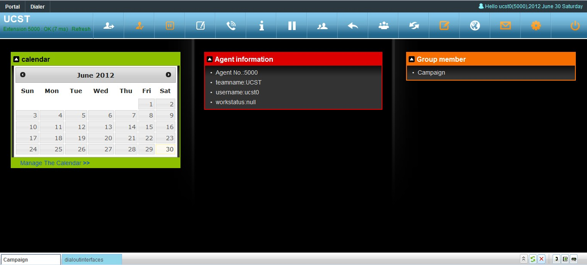
- Selecciona la tarea de campaña en el panel lateral — se muestra el detalle de la tarea y la lista de clientes pendientes.
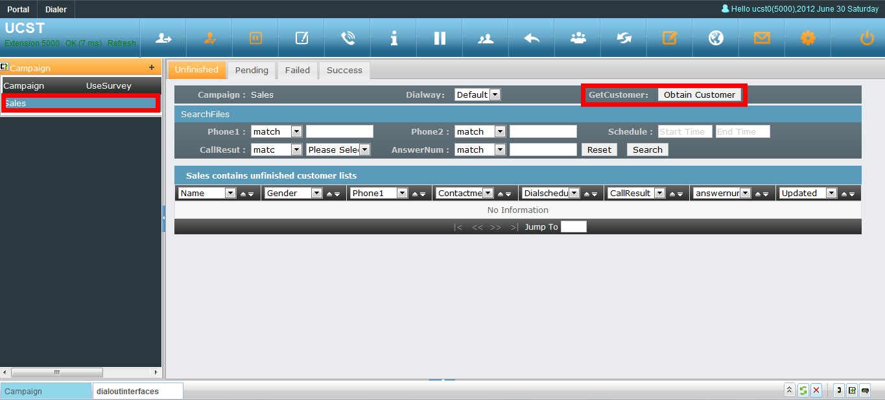
Si el agente puede pedir manualmente un cliente (según la configuración de "obtención de datos" de la tarea), lo hace con el botón Obtain Customer:
- Al hacer doble clic en un cliente se abre su ficha con los campos configurados para ser visibles.
- El agente marca (según el modo configurado: manual, preview o automático — ver 4.2).
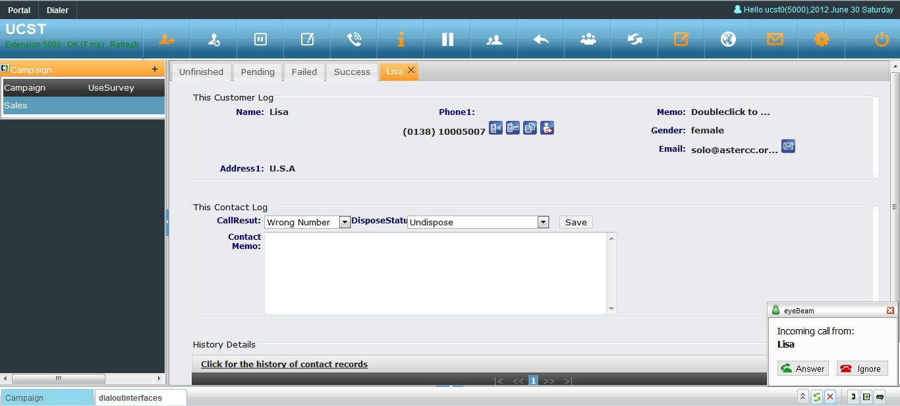
- Al colgar, registra el resultado de la llamada, el estado de procesamiento, y notas adicionales — el sistema puede exigir que haya habido conexión real antes de permitir guardar (configurable en la tarea). Si el estado de procesamiento queda como "Pending" (en seguimiento), se puede fijar además la fecha/hora del próximo contacto y una prioridad:
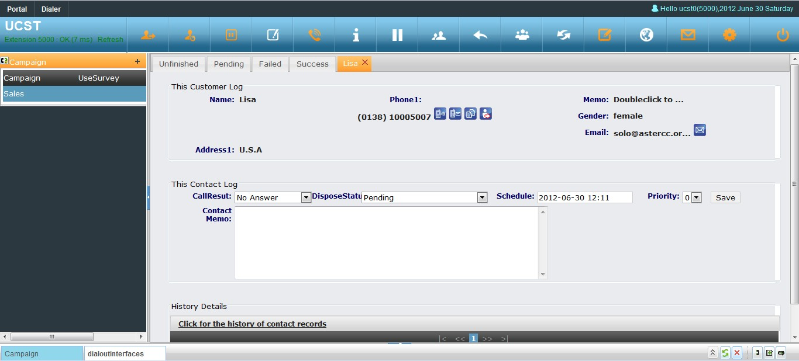
6. Ver los reportes de cierre¶
Al terminar la sesión de trabajo, en Reportes y estadísticas se puede consultar, para la tarea o el periodo elegido:
| Indicador | Qué mide |
|---|---|
| Volumen de datos | Cuántos clientes se marcaron |
| Tasa de contactación | Clientes contestados ÷ volumen de datos |
| Tasa de éxito de marcación | Llamadas contestadas ÷ llamadas realizadas |
| Sin guardar por el agente | Llamadas donde no se registró resultado |
| En seguimiento / completados | Según el estado de procesamiento elegido por el agente |
| Aprobados en control de calidad | Cuántos casos pasaron la revisión de calidad |
Además de este reporte por tarea, Reportes y estadísticas → Detalle de servicio del agente (y, de forma equivalente, el detalle de llamadas salientes/entrantes, el resumen de salientes y los registros de calificación) permiten ver el mismo tipo de desempeño agrupado por agente, grupo o equipo, con salida por año/mes/semana/día/hora — usando los mismos indicadores de duración, tiempo de gestión posterior y timbrado descritos en 4.8 Reportes, estadísticas y financiero. El sistema solo genera estas estadísticas de trabajo sobre agentes; una llamada saliente hecha directamente desde una extensión, sin pasar por un agente, solo deja el registro de la llamada, sin las métricas agregadas.
Ejemplo real: un ciclo completo con cifras
Para ilustrar cómo se interpretan estos indicadores, así se vio el cierre de un ciclo de prueba sobre un paquete de 5 clientes:
- Se hicieron 6 llamadas: 4 contestadas y 2 sin respuesta.
- De las 4 contestadas, 3 quedaron en "completado (éxito)" y 1 en "completado (dato no coincide)".
- De las 2 sin respuesta, en una el agente colgó sin registrar resultado de llamada — por eso el registro de llamadas de la tarea mostró esa fila con el resultado vacío.
- En control de calidad solo aparecieron 3 registros para revisar: los que habían quedado en "completado (éxito)".
- Los clientes ya trabajados se pueden regresar (rollback) a la tabla de origen (clientes individuales) de dos formas: revertir todo el plan de una sola vez, o revisar y revertir registro por registro — la elección depende de si se necesita precisión por caso o rapidez para todo el lote.
7. Encuestas y pantalla emergente en campaña¶
Una campaña puede combinarse con una encuesta para estandarizar lo que el agente pregunta y registra en cada llamada:
- Crea primero la encuesta en Encuestas → Encuestas y agrégale las preguntas (opción única o texto libre), agrupadas en grupos de preguntas para facilitar su gestión.
- Al crear o editar la tarea de campaña, vincula la encuesta. Si el paquete de clientes no se seleccionó al crear la campaña, el sistema genera uno automáticamente con el mismo nombre de la tarea.
- Define qué campos del cliente son visibles/editables desde los botones de configuración de campos de gestión e interfaz en la propia tarea.
- Registra un número de CV (número virtual/DID) para la campaña — en Administración avanzada del call center → Vinculación de aplicación de entrada, eligiendo tipo "tarea de marketing outbound" y asociando el número de llamante o el DID. Cuando un cliente que ya está en el paquete llama por ese número, el sistema hace pop-up automático de su ficha y de la encuesta vinculada a la tarea, aunque la llamada sea entrante.

Este último punto — el pop-up de encuesta al recibir una llamada entrante de un cliente ya cargado en la campaña — es la vía para usar campañas salientes también como mecanismo de identificación de llamadas entrantes de esos mismos clientes. Para el enlace del pop-up con el binding de aplicación y DID (caso puramente entrante) ver Call center inbound.
Si el cliente cuelga sin terminar la encuesta, marcar el estado de procesamiento como "en seguimiento" conserva el punto exacto donde quedó — al volver a llamar (o si el cliente devuelve la llamada y entra por la vinculación de arriba), la encuesta continúa desde la siguiente pregunta sin perder las respuestas ya dadas. El agente puede usar la tecla Tab para confirmar cada respuesta y avanzar sin usar el mouse.
Info
Este mismo mecanismo de pop-up de encuesta también existe para llamadas de usuarios de entrada virtuales (oficina virtual/BPO), vinculando el número/DID a un "usuario de entrada" en vez de a una tarea de marketing outbound — ese escenario no aplica aquí y se documenta en la sección de oficina virtual/BPO.
También existe una variante sin agente: la encuesta de voz con marcador predictivo, donde el propio marcador reproduce las preguntas grabadas y el cliente responde con el teclado del teléfono, sin que intervenga un agente. Se configura igual que una campaña normal pero con un tipo de encuesta "voz", subiendo primero los archivos de audio de cada pregunta y, en la tarea, seleccionando esa encuesta como destino de la llamada contestada (en lugar de un agente o grupo). Es útil para sondeos masivos donde no se necesita conversación, solo respuestas por tono. Los resultados (cuántos terminaron la encuesta, distribución de respuestas por pregunta) se consultan igual que en Encuestas → Estadísticas de encuesta.
8. Troncales dedicados por tipo de campaña¶
Si se necesita que una campaña o un grupo de agentes salga siempre por un troncal específico (por ejemplo, para separar el costo o el origen de llamada por tipo de campaña), hay tres niveles donde fijar el troncal, de más general a más específico:
- Por equipo: si el equipo solo tiene enlazado un troncal (no un grupo de troncales), todas las tareas de marketing outbound de ese equipo salen por ese troncal.
- Por grupo de cuentas: las cuentas de los agentes de la tarea se agregan a un grupo de cuentas, y a ese grupo de cuentas se le asigna el troncal (o grupo de troncales) a usar.
- Por marcador: en el marcador predictivo, se especifica qué cuenta del grupo de cuentas (y por lo tanto qué troncal) usar para las llamadas salientes de esa tarea en concreto.
9. Work orders desde la campaña¶
Una campaña puede generar work orders directamente desde el resultado de la llamada:
- El work order debe crearse primero indicando qué grupo(s) de agentes pueden usarlo.
- La campaña debe usar tabla principal (no se puede cambiar el paquete de clientes una vez creada la campaña con esta opción).
- Se vincula el work order a uno o varios resultados de llamada de la campaña.
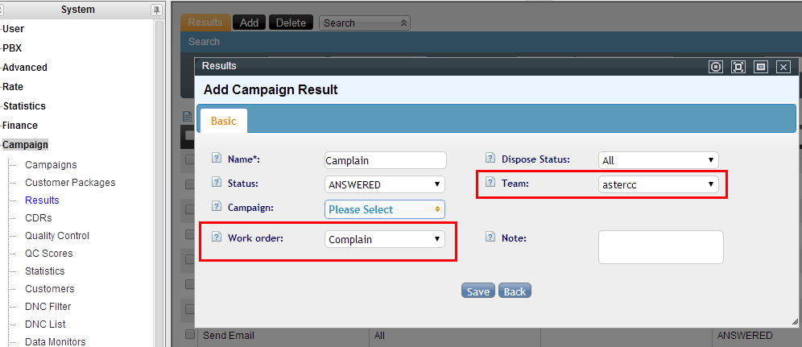
- Cuando el agente selecciona ese resultado en la ficha emergente del cliente, aparece un enlace para crear el work order directamente desde ahí. Un jefe de grupo también puede crear uno manualmente desde Work order de grupo.
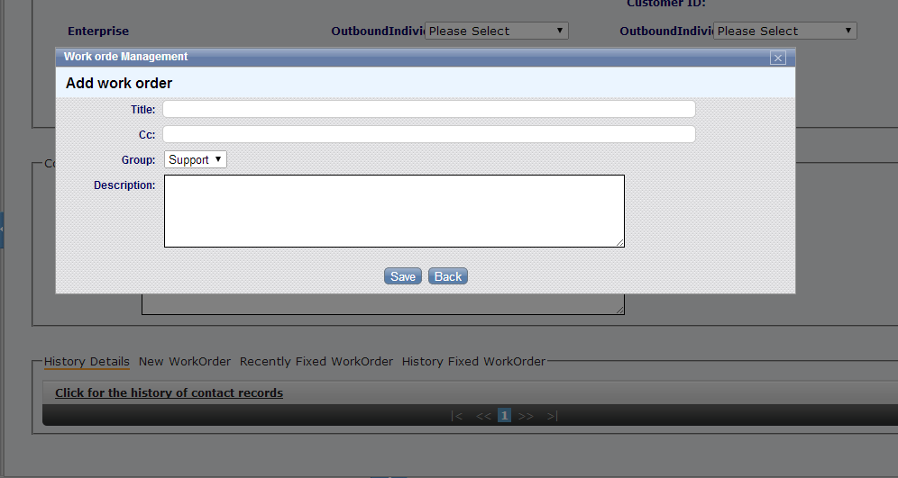
Para el detalle de gestión y ciclo de vida del work order (asignación, seguimiento, cierre) ver el módulo de referencia.
10. Venta durante la campaña (e-commerce)¶
Si la campaña vincula un catálogo de e-commerce, la ficha emergente del cliente incluye una sección para buscar productos, armar el pedido y guardarlo sin salir de la pantalla de llamada — el mismo flujo de venta que en atención al cliente. Ver E-commerce para el detalle de cómo configurar el catálogo y registrar pedidos; aquí solo hace falta enlazar el catálogo ya creado a la campaña desde su página de edición.
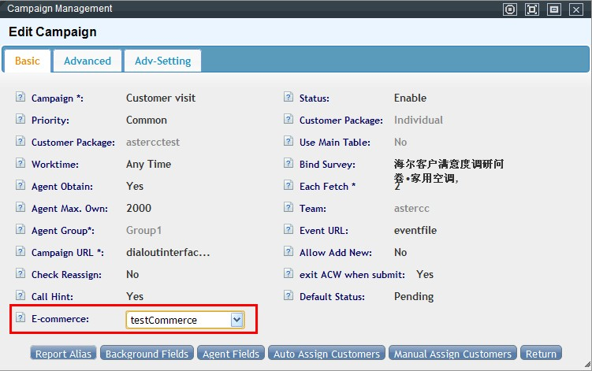
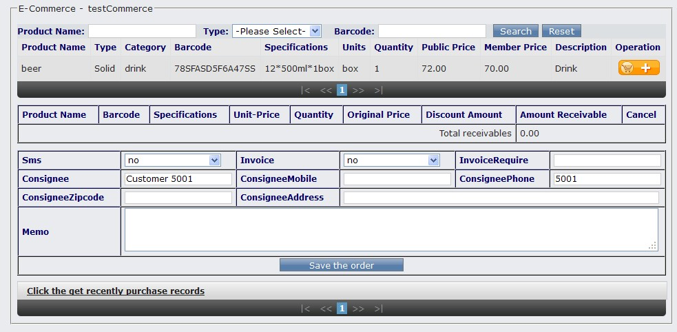
11. Facturación de llamadas de campaña¶
Las llamadas salientes de la campaña se tarifican igual que cualquier llamada saliente del sistema, con hasta tres niveles de tarifa aplicables (sistema, equipo, cuenta). Cada llamada de la campaña queda reflejada en el CDR con su costo, y el saldo de la cuenta/equipo se actualiza automáticamente. El detalle de cómo configurar tarifas por prefijo, equipo o cuenta está en 4.4 Tarifas y facturación — esta página no repite esa configuración.
12. Gestión operativa de la tarea¶
Dos operaciones frecuentes durante la vida de una tarea de campaña:
- Forzar el marcado inmediato de números con hora programada: si un lote de números quedó con una hora de reintento futura (
schedule) y se necesita marcarlos ya, se buscan en la lista de marcado por "hora programada", se eliminan (solo es posible si su estado es "pendiente de marcar"), y luego se recuperan de vuelta desde el paquete completo — al recuperarlos, su hora programada queda en blanco y entran de inmediato en la cola de marcado. Alternativa por base de datos (uso avanzado, revisar antes con el equipo técnico): cambiar el campodialerde la campaña astarty poner en0000-00-00 00:00:00el camposchedulede los registros a marcar ya en la tabla de lista de marcado de esa tarea. - Terminar una operación en curso (importación o borrado de datos) que está ralentizando el sistema: una importación o un borrado masivo de clientes de la campaña puede quedar "colgado" o simplemente se necesita detenerlo. Si el trabajo todavía está en cola (estado "Import"/en cola, equivalente a "未进行" en Administración avanzada del call center → Gestión de tareas por lotes), basta con eliminarlo desde Call Center → Shell Jobs. Si ya está en ejecución (estado "Importing"/"Deleting", equivalente a "进行中"), hay que terminar el proceso en el servidor (identificarlo con
ps ax | grep asterccimportoasterccdeletey matarlo consudo kill <PID>) antes de eliminar el registro del job — de lo contrario el proceso sigue consumiendo recursos aunque el job se borre de la interfaz. Este mismo mecanismo de cancelación aplica también a los borrados directos (los que se ejecutan de inmediato al pedirlos desde Gestión de clientes, sin pasar por un job programado) — en ese caso, al no haber un proceso de job que matar, se cancela reiniciando el servicio con/etc/init.d/php-fpm restart.
13. Controlar qué campos ve cada quien¶
Los campos del cliente visibles en pantalla se configuran por separado como frontend (lo que ve el agente) y backend (lo que ve administración) desde la propia tarea — la misma configuración de "campos para el agente / campos para administración" descrita en 4.2 Marcador y campañas. Cada una se aplica en varias pantallas distintas:
| Configuración | Pantallas donde aplica |
|---|---|
| Campos frontend | Lista de clientes del agente (la búsqueda del agente solo puede usar los primeros 5 campos configurados aquí), ficha emergente del agente, pantalla de asignación manual de tarea |
| Campos backend | Listado y búsqueda en Gestión de clientes, exportación desde Gestión de clientes, ficha y búsqueda en Control de calidad |
14. Plantillas de SMS, correo y fax con comodines¶
El sistema soporta tres tipos de plantilla: SMS, correo y fax. Al crear una plantilla (Gestión de mensajería masiva → Gestión de plantillas → Agregar) se define, entre otros:
| Campo | Qué controla |
|---|---|
| Tipo de plantilla | SMS, correo o fax — condiciona qué otros campos aparecen (ej. SMS no lleva título; fax exige adjuntar el archivo) |
| Propósito | Normal (uso propio, ej. publicidad) o de negocio (tarea, factura, notificación de correo de voz — usadas automáticamente por el sistema; solo puede haber una plantilla de negocio activa por equipo e idioma) |
| Idioma | Permite tener la misma plantilla en varios idiomas; el agente elige según el idioma del cliente |
| Comodín | Indica si el contenido usa variables de sistema que deben reemplazarse al enviar |
| Editable | Si el agente puede modificar el contenido antes de enviar, o debe enviarse tal cual |
| Equipo | Si se deja vacío, la plantilla está disponible para todos los equipos |
| Tipo y nombre de objeto | A qué módulo y tarea/negocio se asocia — si coincide con la tarea desde la que el agente envía, el sistema preselecciona esta plantilla automáticamente |
Sintaxis del comodín: el contenido usa ##nombre_columna## (ej. ##param0##), y el nombre debe coincidir exactamente con el nombre de columna elegido al importar los datos del cliente. Ejemplo de plantilla de SMS:
Estimado ##param0##, su saldo de este mes es ##param1## y le quedan ##param2## MB de datos.
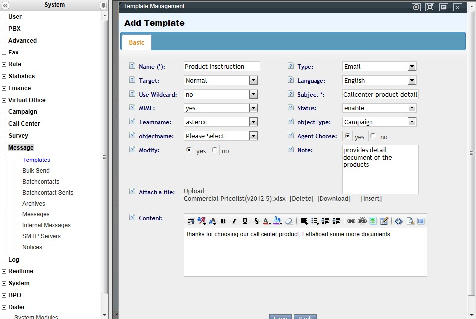
Enviar correo masivo con plantilla (comodines incluidos):
- Crear la plantilla de correo y, por separado, el servidor de correo (Gestión de mensajería masiva → Servidor de correo).
- Importar la lista de destinatarios desde Administración avanzada del call center → Importación de datos, mapeando cada columna del archivo a un campo — las columnas que se usarán como comodín deben mapearse con el mismo nombre que la variable de la plantilla (ej.
param0,param1,param2), y la columna de correo se mapea atarget. - En Envío masivo: paso 1, elegir tipo de envío y origen de los clientes destino; paso 2, confirmar la columna
target; paso 3, elegir fecha/hora de envío y hacer doble clic en la plantilla de la derecha para previsualizar título y contenido ya con las variables sustituidas; paso 4, confirmar la vista previa final; paso 5, elegir el servidor SMTP y enviar — el sistema confirma "¡Enviado con éxito!".
El estado de los envíos se revisa en Gestión de mensajería masiva → Gestión de mensajes enviados (éxito) y Gestión de mensajes pendientes (fallidos o en cola).
Envío individual desde la ficha del cliente: tras cerrar una llamada, el agente puede hacer clic en el ícono junto al correo o teléfono del cliente para editar y enviar un mensaje suelto — elige plantilla, idioma y servidor, y el contenido se autocompleta con los comodines ya resueltos (editable si la plantilla lo permite).
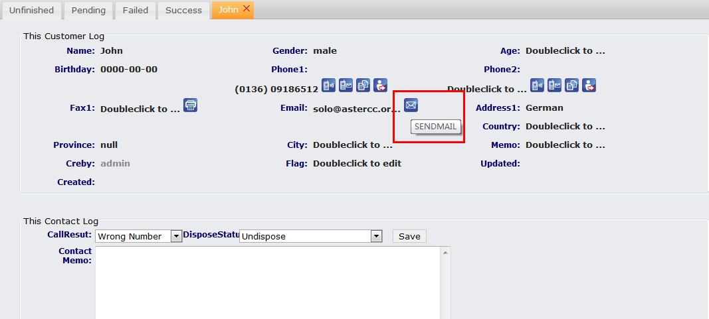
Usar una plantilla desde un evento de colgado de la tarea: además del envío manual, una tarea puede disparar el envío de una plantilla automáticamente al colgar según el resultado de la llamada (ej. "contestada sin respuesta"): en la tarea, agregar un evento de colgado, elegir el resultado objetivo y la plantilla, y guardar. Para activarlo, el grupo de agentes debe tener esa tarea seleccionada como "aplicación de salida actual" en su configuración básica.
Tip
El contenido de SMS solo admite texto (sin imágenes ni multimedia); cada SMS cuenta 70 caracteres y el exceso se divide automáticamente en varios mensajes. Para pegar contenido con formato en una plantilla de correo, pégalo primero en un editor de texto plano — pegar directo desde Word puede introducir caracteres especiales que el sistema no interpreta y corrompan el contenido.
Proveedores de SMS soportados: AsterCC trae integrado, por defecto, un proveedor de SMS (Shanghai Xi'ao). Además, soporta configurar directamente desde su lista interna (sin desarrollo adicional):
| Proveedor | Notas |
|---|---|
| Shanghai Xi'ao (希奥) | Proveedor por defecto — basta con la cuenta y contraseña del proveedor |
| Yijia365 (驿家365 / eaka365) | Interfaz SOAP |
| Yimei (亿美) | Interfaz SOAP |
| Ruitewei (瑞特维) | Interfaz HTTP |
| Diandianke (点点客) | Interfaz HTTP |
Para módems SMS por puerto serie o plataformas de SMS de terceros no listadas, se requiere integración vía la guía de desarrollador correspondiente — fuera del alcance de este caso de uso.
15. Fax en una tarea outbound¶
Para recibir fax automáticamente en un número dedicado: crear el DID en PBX → DID, crear una ruta entrante en PBX avanzado que transfiera ese DID al dispositivo de fax, y otorgar el permiso del módulo de fax al rol correspondiente en Administración de cuentas y permisos.
Para habilitar el envío/recepción de fax dentro de una tarea outbound, confirma primero que el módulo de fax esté instalado, luego crea el dispositivo en Gestión de fax → Gestión de dispositivos de fax:
| Campo | Qué define |
|---|---|
| Nombre del dispositivo | Identifica el dispositivo entre varios |
| Identificador visible | Nombre que aparece en el encabezado del fax recibido por el destinatario |
| Extensión interna | Número interno al que se enrutan los fax entrantes de ese dispositivo |
| Canales | Cuántos fax simultáneos soporta — más canales evita bloqueos, pero consume más recursos |
| Número/nombre de llamada | Identificador mostrado cuando ambos extremos usan IP |
| Código de país / de ciudad | Requeridos para formar el número de fax completo |
| Timbres antes de recibir | En qué timbre empieza a recibir (recomendado: 2) |
| Páginas máximas por fax | Excedido este número, el resto se guarda como un registro nuevo |
| Equipo / cuenta | Dueño del dispositivo, para facturación |
| Rango de uso | Quién puede usar el dispositivo y ver sus registros |
Tras guardar (y editar) un dispositivo hay que hacer clic en el aviso de recarga para que el cambio tome efecto.
Enviar un fax desde Gestión de fax → Enviar fax, en dos modos:
- Automático: el fax de destino recibe directamente sin intervención humana — se indica el número destino, se elige el dispositivo y se sube el archivo (solo
doc,docxopdf; el sistema lo convierte a PDF). - Manual: el fax de destino requiere que alguien active el envío desde su lado — el sistema primero conecta tu extensión con el número del cliente por voz; cuando escuchas el tono de fax del otro lado, subes el archivo y pulsas el botón de envío.
Los registros de envío/recepción (con descarga del PDF) quedan en Gestión de fax → Registro de fax.
16. Asignar y recuperar clientes entre el total y la tarea¶
El total de clientes del equipo (el "总表"/"公海" del wiki original) almacena todos los clientes de forma centralizada; la tabla de la tarea (el "私海") almacena solo los clientes de esa campaña. Al elegir "nuevo paquete de clientes" en el paso 2 de esta guía, la tabla queda independiente del total — los datos importados a la tarea no se reflejan en el total, y viceversa. Alternativamente, se puede elegir vincular la tarea directamente al total del equipo, en cuyo caso sí se sincronizan.
Con paquetes independientes, los datos se mueven entre el total y la tarea manualmente desde Gestión de clientes → Clientes individuales:
- Asignar del total a una tarea: filtrar los clientes a asignar, seleccionarlos, y usar Asignar selección → elegir la tarea destino.
- Recuperar de una tarea al total: filtrar los clientes de esa tarea, seleccionarlos, y usar Asignar selección → elegir "Recuperar al total de clientes".
17. Marcar solo con el teclado del teléfono¶
Un agente puede trabajar una tarea outbound usando exclusivamente el teclado del teléfono, sin abrir la interfaz web — útil cuando el paquete de la tarea no usa el total de clientes y el agente pertenece a un grupo con cola asignada.
- Iniciar sesión en la cola: el agente marca
*64(tecla configurable en Sistema → Teclas rápidas del sistema) y, siguiendo el mensaje de voz, ingresa el número de cola seguido de#(o0#para todas las colas). - Elegir la tarea: con la sesión iniciada, marca
*0para que el sistema disque el siguiente cliente de la tarea configurada como "aplicación de salida actual" del grupo de agentes (Administración de cuentas y permisos → Gestión de grupos de agentes). - Marcar el resultado con dos dígitos: tras que el cliente cuelga, el sistema pide el estado — se ingresan dos números consecutivos:
- Primer dígito — estado de procesamiento:
1sin procesar,2en seguimiento,3enviado con éxito,4enviado con error. - Segundo dígito — resultado de llamada: el número de orden (por fecha de creación) del resultado dentro de ese estado de procesamiento — por ejemplo, si "enviado con éxito" tiene los resultados "no interesado" (creado primero) e "interesado" (creado después), marcar
31o32respectivamente.
- Primer dígito — estado de procesamiento:
Warning
El resultado de llamada solo queda registrado en Gestión de clientes si tiene un equipo asignado — de lo contrario, solo se guarda el estado de procesamiento, sin resultado de llamada.
18. Agregar campos personalizados e importar con diccionario de coincidencia¶
Cuando los datos del cliente incluyen información que no existe como campo del sistema (ej. "escuela" para una campaña dirigida a estudiantes), se agrega primero en Gestión de clientes → Campos personalizados → Agregar:
- Elegir el equipo y el tipo de tabla (cliente individual o institucional) — determina a qué paquetes de esa combinación se les puede aplicar el campo.
- Elegir uno o varios paquetes de clientes concretos para agregarles el campo — o dejar la selección vacía para agregarlo al total de clientes (en ese caso, no podrá editarse después desde los parámetros del paquete).
Con el campo ya creado, se importa el archivo desde Administración avanzada del call center → Importación de datos: se elige el paquete destino (aparecen todas sus columnas, incluida la nueva), se mapea cada columna del archivo — marcando "coincidencia de diccionario" en las que lo necesiten — y, si la tarea usa predial, opcionalmente se mapean también teléfono/prioridad/hora de predial.
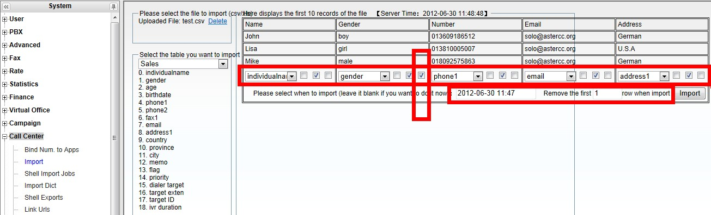
El diccionario de coincidencia (configurado en Administración avanzada del call center → Coincidencia de datos de importación) traduce valores del archivo origen a los que la base de datos espera en campos de tipo enumerado — por ejemplo, "男"/"女" a male/female.
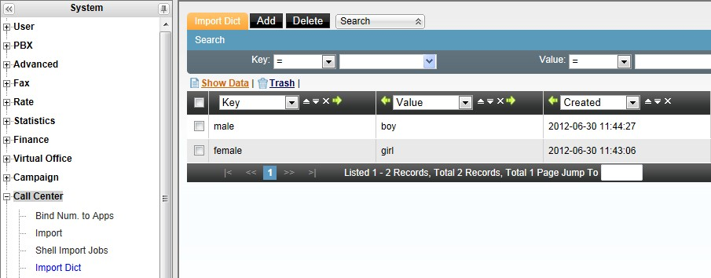
Antes de importar, se indica cuántas filas iniciales del archivo hay que descartar (normalmente 1, la fila de encabezados). Al confirmar, el sistema genera un plan de importación con número de seguimiento y lo procesa en segundo plano (revisar el avance en Gestión de planes de importación).
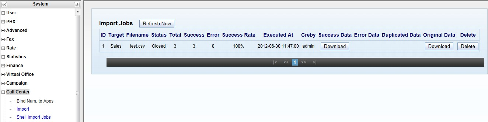
Tras importar, se revisan/ajustan los campos visibles para el agente y para administración desde la tarea (punto 13 de esta guía) y se confirman los datos en Gestión de clientes de la tarea.
Reprogramar contacto con prioridad
Al marcar el estado de procesamiento como "en seguimiento" (paso 5 de "Trabajo diario del agente"), el sistema puede pedir fecha/hora de la próxima llamada y una prioridad — útil, por ejemplo, en tareas de agendamiento de visitas, para acordar con el cliente cuándo volver a contactarlo.
19. Filtro de recuperación automática hacia la lista de predial¶
Cuando una tarea usa predial (marcado automático de una lista, sin que el agente pida cliente por cliente), un filtro automatiza la recuperación periódica de clientes que cumplen ciertas condiciones desde el paquete de la tarea hacia la lista de predial, evitando recuperarlos manualmente. Se configura en Predial → Lista de predial → Filtros:
| Campo | Qué define |
|---|---|
| Nombre del filtro | Identifica su propósito |
| Estado | Habilitado / deshabilitado |
| Campo de teléfono prioritario | De los teléfonos del cliente, cuál usa el predial primero |
| Prioridad | Prioridad de marcado de los clientes recuperados por este filtro |
| Hora de marcado | A qué hora se marcará a los clientes recuperados en esta corrida |
| Horario de ejecución | Expresión tipo cron (minuto, hora, día, mes, semana) — * en todos los campos significa "siempre activo"; día y semana no pueden combinarse a la vez |
Las condiciones del filtro combinan campo + operador (contiene, menor que, igual, mayor que, distinto de) + valor, enlazadas con y/o — por ejemplo, "edad mayor que 25 y nombre contiene 王". También se puede forzar la ejecución inmediata de un filtro con el botón Ejecutar ahora, útil para recuperar de golpe un segmento puntual (ej. "nombre contiene Dalian").
Warning
Un número que ya está en la lista de predial no se vuelve a recuperar por un filtro, aunque cumpla sus condiciones — evita duplicados en la cola de marcado.
Referencia rápida¶
| Paso | Dónde |
|---|---|
| Extensión, agente, softphone | Guía rápida para administradores |
| Paquete de clientes | Marketing outbound → Gestión de paquetes de clientes |
| Resultados de llamada | Marketing outbound → Gestión de resultados de llamada |
| Tarea de campaña | 4.2 Marcador y campañas |
| Reportes de cierre | 4.8 Reportes, estadísticas y financiero |
| Encuesta / pop-up en campaña | Encuestas → Encuestas; vincular en la tarea de campaña |
| Troncal por campaña | Equipo, grupo de cuentas o marcador (de más a menos general) |
| Work order desde campaña | Vincular en resultados de llamada de la tarea |
| Catálogo e-commerce en campaña | Vincular en la edición de la tarea de campaña |
| Terminar importación/borrado en curso | Call Center → Shell Jobs (o Gestión de tareas por lotes) — + acceso al servidor si ya está en curso |
| Controlar campos visibles | Dentro de la tarea → Campos frontend / backend |
| Plantillas de SMS/correo/fax | Gestión de mensajería masiva → Gestión de plantillas |
| Servidor(es) de SMS y proveedores soportados | Gestión de mensajería masiva → Servidor de SMS |
| Fax (dispositivos, envío, registros) | Gestión de fax |
| Asignar/recuperar clientes del total | Gestión de clientes → Clientes individuales → Asignar selección |
| Marcar solo con teclado del teléfono | *64 (iniciar sesión), *0 (siguiente cliente), dos dígitos (resultado) |
| Campos personalizados | Gestión de clientes → Campos personalizados |
| Diccionario de coincidencia al importar | Administración avanzada del call center → Coincidencia de datos de importación |
| Filtro de recuperación a predial | Predial → Lista de predial → Filtros |
Fuentes¶
raw/zh/用途和案例/为企业建立一个外呼呼叫中心用于管理销售.txtraw/en/to_establish_an_outbound_program.txtraw/en/real_case_guidance/how_to_dial_the_schedular_calling_immediately.txtraw/en/real_case_guidance/how_to_terminate_the_mission.txtraw/en/real_case_guidance/step_of_configuring_outbound_and_inbound_of_telephone_system.txtraw/en/real_case_guidance/step_of_popup_survey_in_a_campaign.txtraw/en/use_case/billing_and_invoice.txtraw/en/use_case/for_survey_or_sales_outbound_campaign.txtraw/en/how-to/how_to_config_a_campaign.txtraw/en/how-to/how_to_config_inbound_popup_for_campaign.txtraw/en/how-to/how_to_configure_voice_survey_with_predictive_dailer.txtraw/en/how-to/how_to_settings_campaign_trunks_for_different_purposes.txtraw/en/how-to/how_to_use_work_order_in_campaign_module.txtraw/en/how-to/how_to_config_e-commerce_in_a_campaign.txtraw/en/regular_function_description_in_call_center/outbound_functions.txtraw/zh/实际案例指导/astercc支持的sms供应商列表.txtraw/zh/实际案例指导/外呼营销任务中字段的控制.txtraw/zh/实际案例指导/如何使用带有通配符功能的电子邮箱模板群发邮件.txtraw/zh/实际案例指导/如何使用模板中的通配符.txtraw/zh/实际案例指导/如何使用短信和电子邮件模板.txtraw/zh/实际案例指导/如何分配或回收总表客户资料.txtraw/zh/实际案例指导/如何利用astercc统计坐席工作情况.txtraw/zh/实际案例指导/如何利用电话键盘进行外呼任务.txtraw/zh/实际案例指导/如何取消正在进行的删除_导入数据的任务.txtraw/zh/实际案例指导/如何在外呼营销模块中使用短信模板.txtraw/zh/实际案例指导/建立一个主动外呼呼叫中心.txtraw/zh/实际案例指导/传真模块使用说明.txtraw/zh/用途和案例/在外呼任务中使用传真.txtraw/zh/用途和案例/如何建立一个外呼约访任务.txtraw/zh/用途和案例/如何设定自定义字段并导入客户资料.txtraw/zh/用途和案例/如何设定过滤器.txtraw/zh/用途和案例/如何设置外呼任务的呼入弹屏.txtraw/zh/用途和案例/如何设定呼入问卷弹屏.txt